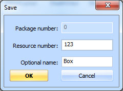
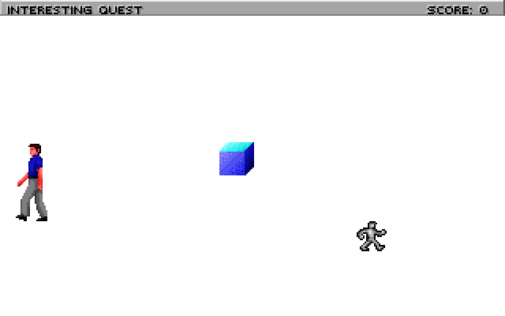
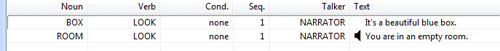
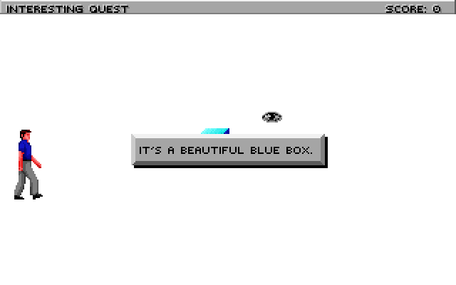
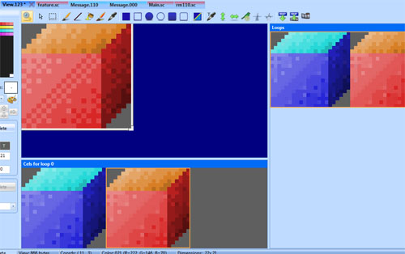
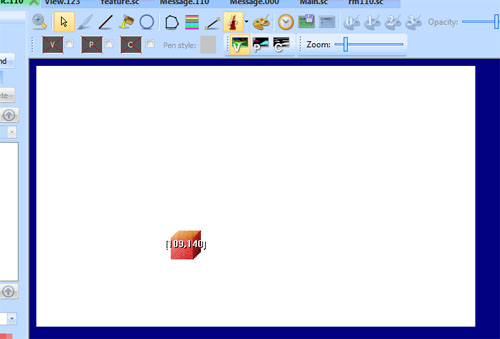
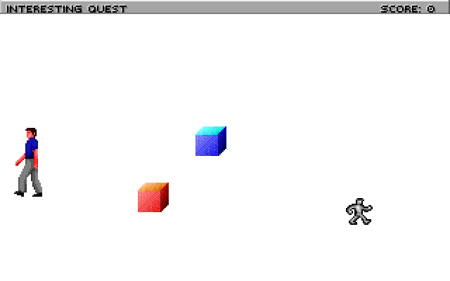
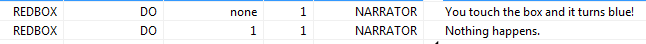

Important
SCI1.1 only.
Interacting with Objects¶
This will show how to add an object to your room and interact with it.
Adding a Prop¶
First, go to the Game Explorer, and add the Box sample from the Toolbox’s Insert view sample menu. Give it resource number 123:
Next, go back to the rm110.sc script and place the cursor at the bottom. Right-click InsertObject->Prop. Give it a name theBox, and set its view property to 123 (this is the Box view included in the template game). It should look like this:
(instance theBox of Prop
(properties
view 123
x 150
y 100
signal ignAct
loop 0
cel 0
noun N_NOUN
priority 0
)
)
However, this won’t compile properly yet, because we have given it a noun that doesn’t exist. You can just remove the noun property altogether, but we want to actually interact with this box. So go to the message resource for script 110 (use the Messages link in the Toolbox pane). Add a new noun, and call it N_BOX (see Message editor to learn how to do this). Save the message resource and return to the script. Set the noun property of theBox to N_BOX:
(instance theBox of Prop
(properties
view 123
x 150
y 100
signal ignAct
loop 0
cel 0
noun N_BOX
priority 0
)
)
We’re not quite done yet! In addition to declaring a Prop, you need to initialize it. This makes sense, since you might not always want Props to appear right away in a room. So go to the room’s init() method and add this to the end:
(theBox init:)
Now compile and run, and you should see the box in the center of the room:
Interacting with a Prop¶
That was the hard part. Now the easy part.
Suppose we want to display a message when the player looks at the box. To do so, add a message for the LOOK verb on BOX:
Save the message resource and run the game, and try to look at the box:
The ego will turn to look at the box and the message will be displayed. Easy, right? You can add more messages to handle different verbs on the box.
Approach verbs¶
Now, what if you want the ego to approach the box before it performs an action on it?
First, make sure you have a message for the DO verb on the box. Next, go to the place where you init() the box, and change it to this:
(theBox
approachVerbs: V_DO
init:
)
The approachVerbs method lets you list the verbs for which the ego will approach the object. You can specify multiple. Compile, run the game, and see that your ego will walk over to the box before the message appears. You also note, however, that the ego walks right up to the box’s position. Let’s set an approach position so he’s not on top of the box:
(instance theBox of Prop
(properties
view 123
x 150
y 100
signal ignAct
loop 0
cel 0
noun N_BOX
priority 0
approachX 130
approachY 110
)
)
Easier positioning¶
Specifying the exact coordinates to position things can be tedious. There’s a better way.
Let’s add another box. Open up view 123 (the blue box), and add a new cel to the loop. Use the color shifter to make that new cel be red instead of blue:
Save the view and go to the pic for room 110. Enable the The fake ego and choose view 123 (the box). The blue box should appear on screen. Click on it and press the right arrow key to cycle to the next cel, which should be your red cel.
Right-click on the box and choose Copy. This will copy its attributes to the clipboard.
Now, return to your script, and insert a new Prop (right-click, Insert Object->Prop) and call it redBox. It should inherit the view, cel, x and y properties from where you positioned the red box on the pic!:
(instance redBox of Prop
(properties
view 123
x 109
y 140
signal ignAct
loop 0
cel 1
noun N_NOUN
priority -1
)
)
Make a new noun for it (e.g. N_REDBOX), add appropriate values for approachX and approachY, and init() it just like you did for theBox. Compile and run, and it should look like this:
Custom doVerb() handler¶
What are we going to do with this red box? We’ll make it turn blue when you touch it.
That means we actually need to write some code to respond to a verb, instead of just displaying a message. To do this, you override the doVerb() method on an object.
Place the cursor inside the redBox Prop, and right-click Insert Method->doVerb. This adds the doVerb() method, with a default case that calls the super. We want to leave that in, but add a case for V_DO, where we’ll change the cel of the redBox. Cel 1 was red, but cel 0 was blue, remember? So it should look like this:
(instance redBox of Prop
(properties
view 123
x 109
y 140
signal ignAct
loop 0
cel 1
noun N_REDBOX
priority -1
approachX 109
approachY 130
)
(method (doVerb theVerb)
(switch theVerb
(V_DO
; Set it back to cel 0 to turn it blue
(self setCel: 0)
)
(else
(super doVerb: theVerb &rest)
)
)
)
)
Compile and run. Now when the ego touches the red box, he’ll walk over there and it will turn blue.
Now, if you also want to display a message when the box turns blue, you can invoke the message display system directly. First, add a message for when the box is still red, and for when you’ve already turned it blue. We’ll distinguish the messages by making use of the Condition property. The condition for the format will be 0 (none), and for the latter it will be 1.
Then change the doVerb method to look like this:
(method (doVerb theVerb)
(switch theVerb
(V_DO
(if (== 1 (self cel?))
(self setCel: 0)
(gMessager say: N_REDBOX V_DO 0 0)
else
(gMessager say: N_REDBOX V_DO 1 0)
)
)
(else
(super doVerb: theVerb &rest)
)
)
)
Now the narrator should tell you that the box turned blue. And when it’s already blue, that nothing happened.